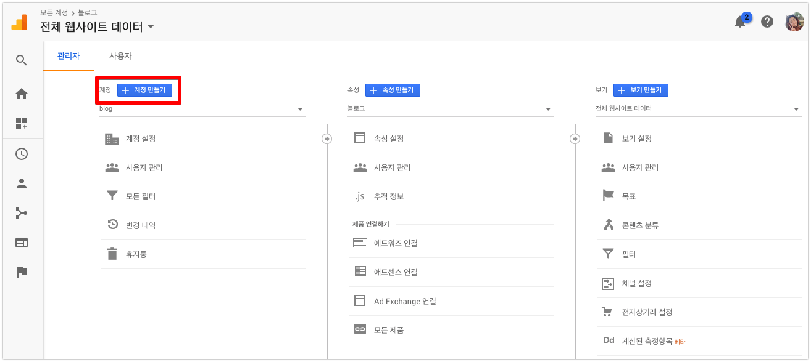
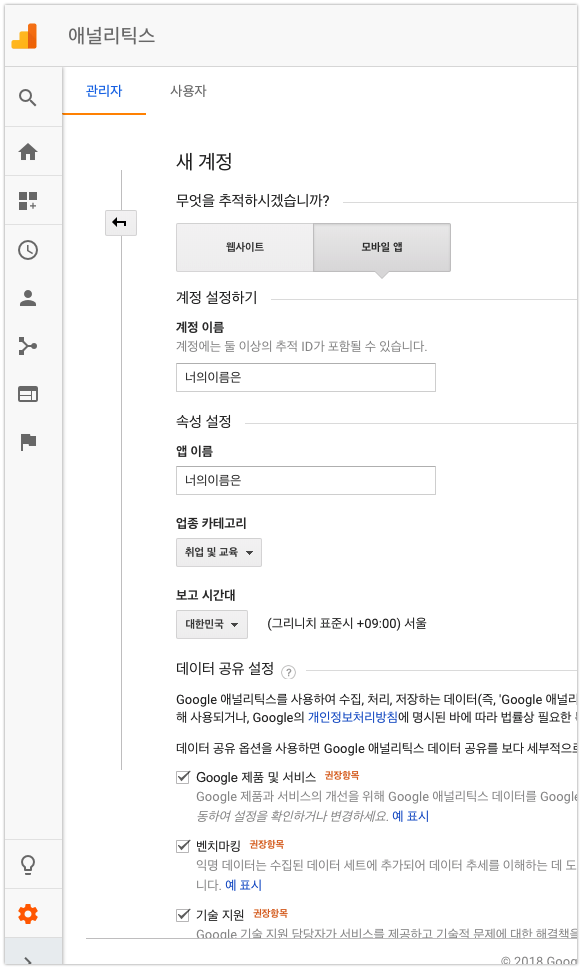
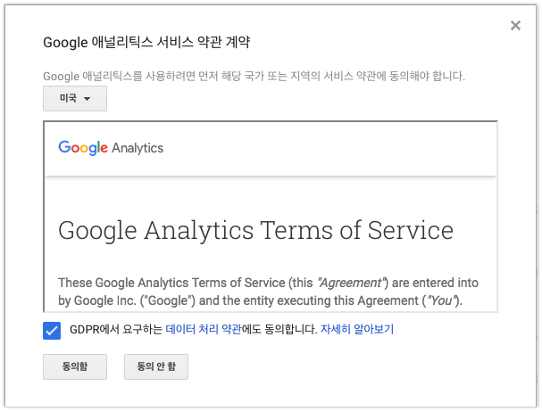
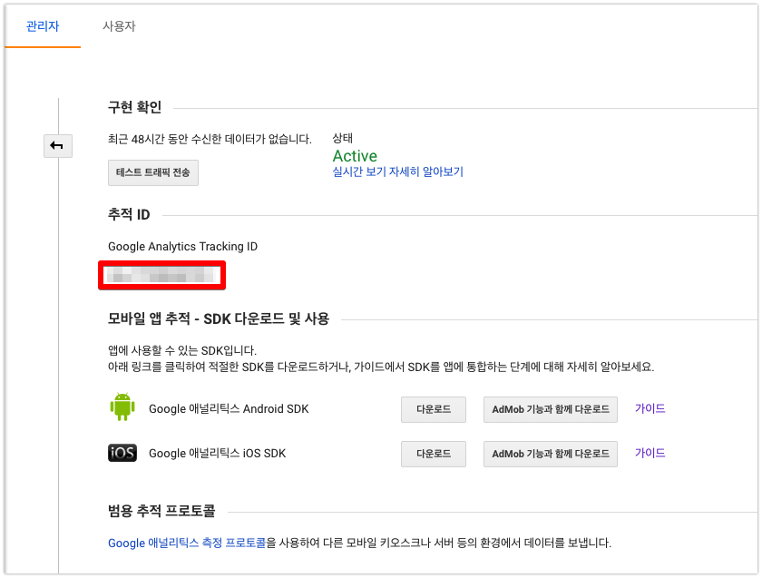
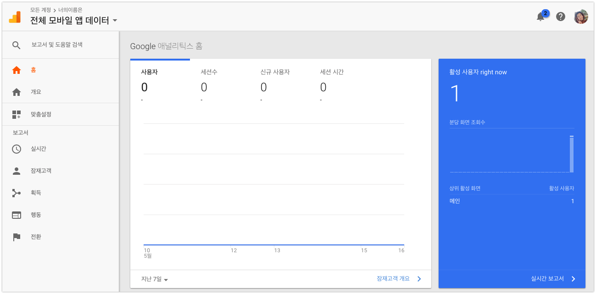
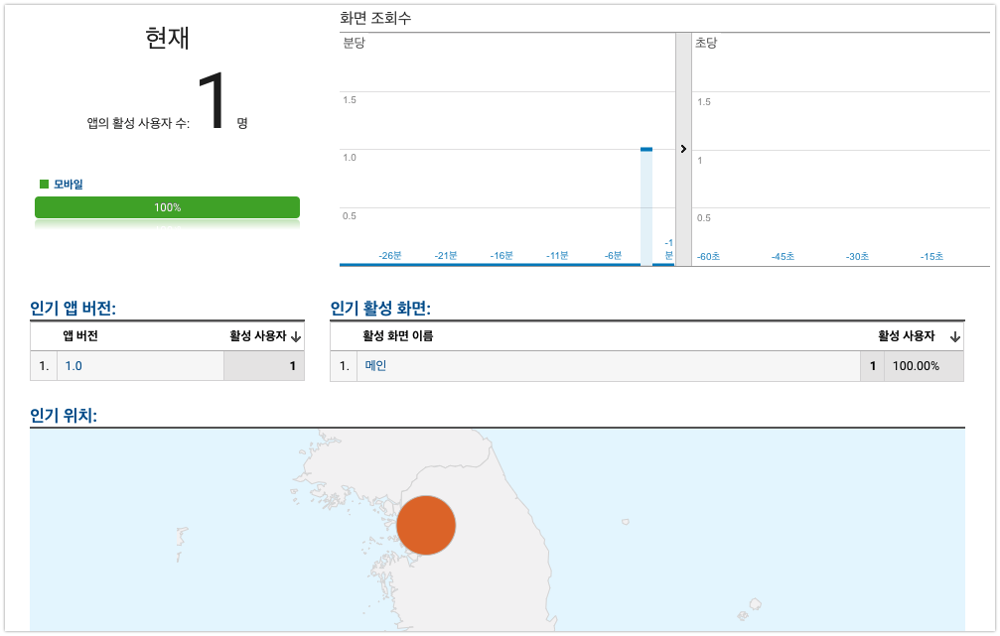

Google Analytics example(구글 애널리틱스를 이용한 앱 운영)
-읽음
Analytics의 필요성
iOS앱을 만들어서 많은 사용자를 보유하려면 사용자가 어떤 기능을 좋아하는지(얼마나 많이 사용하는지), 사용하지 않는 기능은 무엇인지(사용률이 적은 기능)이 무엇인지 알고 계속 개선해 나가야 합니다. 하지만 iOS앱은 AppStore에 업로드하면 개발자의 손을 떠나게 됩니다.
그렇다면 사람들이 어떤 기능을 자주 쓰는지, 필요로 하는지 어떻게 수집을 할까요?지표 수집툴을 사용합니다. 대표적으로는 Google Analytics가 있습니다. 그 외에도 Toast Analytics, UserHabbit 등 다른 지표수집 툴도 많이 있습니다
이번에 Swift 스터디를 하면서 만들었던 앱에 Google Analytics를 연동해보면서 기록을 정리해서 남깁니다.
Google Analytics 가입하기
Google Analytics 에 접속후 로그인합니다. 계정은 구글계정으로 사용합니다.

지표수집에 사용할 앱 or 웹을 등록합니다. 기존에 사용하던 앱 2개가 있어서 위와 같은 페이지로 뜨는데, 관리 쪽 메뉴에서 새로운 앱을 등록할 수 있습니다. 이름이 계정 만들기로 되어있어요.

iOS 앱의 지표수집에 사용할 것으로 모바일 앱을 선택 후 계정이름과, 앱이름을 설정합니다.
데이터 공유 설정은 잘 읽어보시고 선택하시고, 모르겠다 싶으면 전체선택하셔도 괜찮습니다.
모두 작성 완료 후 가장 아래에 추적 ID 가져오기를 클릭합니다.

애널리틱스 서비스 약관동의 팝업이 뜹니다. 요즘 GDPR 관련돼서 이슈가 많은데요. GDPR 관련해서는 따로 꼭 확인해주세요.
동의함을 눌러주세요.

앱 등록이 완료되면 위와 같은 화면이 나옵니다. 이 화면에서 필요한 것은!! 추적 ID 입니다. 복사해두세요~
iOS에 Google Analytics 적용하기
Pod install
1 | pod 'GoogleAnalytics' |
사용중인 프로젝트의 Podfile에 GoogleAnanytics Pod 을 추가, 설치해줍니다.
cocoaPod사용법은 아래 포스팅을 참고해주세요.
iOS 프로젝트에 cocoapods 적용하기
CocoaPods 똑똑하게 사용하기 (명령어, 사용 예시 소개)
AppDelegate 설정
아쉽게도 아직 Swift 에서는 Object-c bridge를 통해 사용합니다. 번거로워요.
object-bridge 는 다음 블로그를 확인해주세요 애플 스위프트(Apple Swift) Bridging-Header.h 생성하기
그리고 AppDelegate의 didFinishLaunchingWithOptions메소드에 아까 발급받은 Tracking ID(추적 ID)를 등록합니다.
1 | func application(_ application: UIApplication, didFinishLaunchingWithOptions launchOptions: [UIApplicationLaunchOptionsKey: Any]?) -> Bool { |
주의할 점
- 우리가 원하는 것은 이 앱의 사용자들이 앱을 사용하는 방식에 대한 데이터입니다. 위의 코드를 개발단계에서 사용할 경우 앱을 개발하는 과정에서의 지표도 수집되기 때문에 유효한 데이터를 수집할 수 없습니다.
- 유효한 데이터만 수집하기 위해서는 아래의 방식을 따릅니다
- 개발용, 배포용 Analytics를 각각 만들어서 빌드 config에 따라 트래킹 ID를 바꿔치기 합니다.
- 사실 개발용은 지표수집의 의미가 없기 때문에 Debug config에서는 트래킹 ID 를 비워도 됩니다.
수집할 지표의 결정
AppDelegate에 트래킹 ID 등록까지 끝났다면, 사용준비는 끝났습니다. 이제 수집하고 싶은 데이터의 위치에 수집코드만 넣어주면 됩니다.
화면 정보 수집
아마 무조건 사용하는 정보일겁니다. 사용자가 어떤 화면에 얼마나 많이, 오래 진입했는지의 정도를 알 수 있는 지표입니다.
1 | override func viewWillAppear(_ animated: Bool) { |
화면 정보를 수집할 뷰컨트롤러의 viewWillAppear에 위의 코드를 넣어줍니다.tracker.set() 의 value에는 화면 이름을 입력합니다.
이제 사용자가 해당 화면에 진입하면 해당 화면정보가 수집됩니다.
이벤트 정보 수집
화면 수집 다음으로 유용한 지표입니다. 사용자가 특정 버튼을 얼마나 눌렀는지, 사용빈도를 알 수 있습니다.1
2
3
4
5
6
7
8private func getVoca() -> Voca? {
let tracker = GAI.sharedInstance().defaultTracker
tracker?.send(GAIDictionaryBuilder.createEvent(withCategory: "단어 퀴즈", action: "문제 Go", label: "문제 출제", value: nil).build() as [NSObject : AnyObject])
// ... 문제 출제 로직 ...
}
위 코드는 특정 버튼을 눌렀을때 해당 이벤트를 수집하는 코드입니다. 카테고리, 액션, 라벨 3단계로 구분되어 개발자가 서비스에 맞게 사용하면 됩니다.


테스트를 해보면 다음과 같은 화면이 뜹니다. 현재 실시간 사용자, 화면, 앱버전, 위치 등 다양한 정보를 볼 수 있습니다!